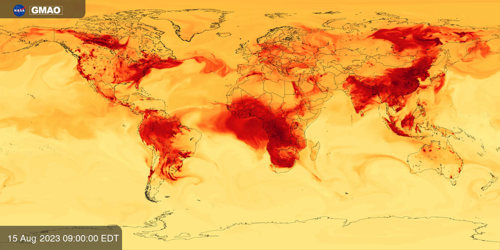

NASA Space Apps · Earth Information Center challenge
Hear the planet change.
NASA tells the story of our changing Earth through maps and images. The Jukebox turns those images into sound, so people who are blind or have low vision can explore the same science by ear and keyboard.

03 · The solution
Three NASA images, ready to hear.
Each one is a real NASA visualization converted into sound. Pick one to explore.
Global Ocean Nutrient Stress
Explore two decades of NASA satellite data mapping how warming ocean waters restrict upwelling and impact marine microorganisms.
Explore Ocean Nutrient StressGlobal Carbon Monoxide (CO) Air Quality
Near-surface carbon monoxide concentrations estimated by NASA's GEOS-CF model, highlighting industrial emissions and wildfire zones across continents.
Explore Air Quality (CO)Wildland Fires: Global View (Dec 2024)
Climate change continues to cause longer fire seasons and more severe wildfires. Worldview active fires from VIIRS highlight global thermal anomalies.
Explore VIIRS Active Fires